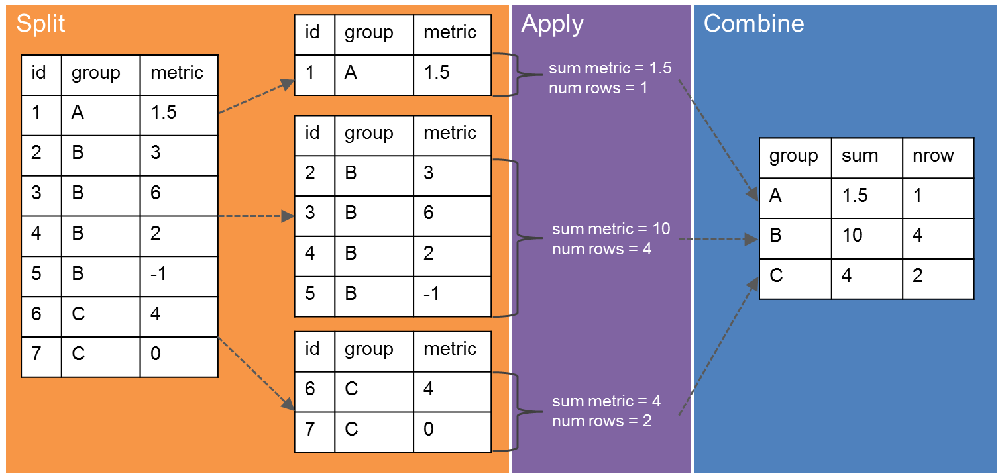
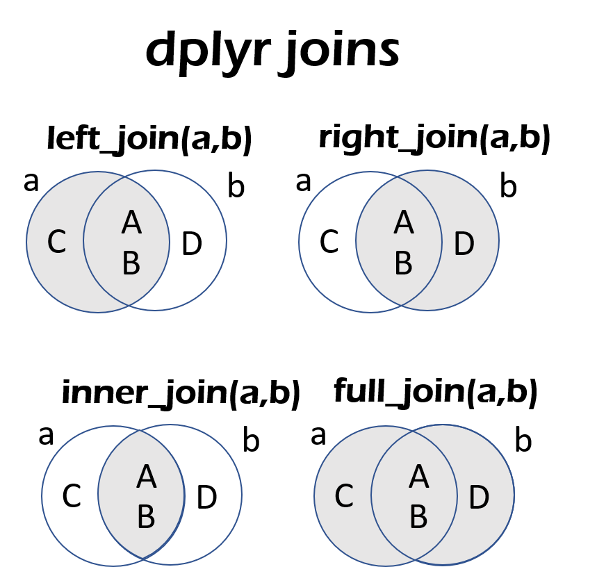

In questo tutorial vedremo la libreria dplyr che fornisce le funzioni fondamentali per trasformare e manipolare i dati.
dplyr introduce una grammatica della manipolazione dei dati in R. Fornisce un’interfaccia coerente per lavorare con i dati, indipendentemente da dove sono archiviati: data.frame , data.table o un database. Le parti chiave di dplyr sono scritte usando Rcpp, questa caratteristica rende molto veloce l’elaborazione dei dati caricati in memoria.
La filosofia di dplyr è quella di avere piccole funzioni che facciano bene una cosa.
I comandi sono facili da ricordare perchè richiamano le azioni che i comandi andranno a svolge. Inoltre si vedrà come concatenare una serie di funzioni grazie all’utilizzo dell’operatore pipe %>%. Questa nuova sintassi permette di rendere il codice più semplice da leggere. La libreria ha 7 funzioni principali che vengono mostrate in tabella insieme all’equivalente comando in SQL:
| Funzione | Descrizione | Equivalenza SQL |
|---|---|---|
| select() | Selecting columns (variables) | SELECT |
| filter() | Filter (subset) rows. | WHERE |
| slice() | Choose rows (by position) | - |
| group_by() | Group the data | GROUP BY |
| summarise() | Summarise (or aggregate) data | - |
| arrange() | Sort the data | ORDER BY |
| join() | Joining data frames (tables) | JOIN |
| mutate() | Creating New Variables | COLUMN ALIAS |
source: Data manipulation with dplyr
Uno dei vantaggi di queste funzioni è che il risultato di ciascun comando sarà sempre un nuovo dataframe. In questo modo sarà molto più semplice eseguire una serie manipolazioni in sequenza.
Una caratteristica aggiuntiva è la capacità di lavorare con i dati memorizzati direttamente in un database esterno. I vantaggi di fare questo sono che i dati possono essere gestiti in modo nativo in un database relazionale, le query possono essere condotte su quel database e solo i risultati della query restituiti nell’ambiente di lavoro.
Le colonne possono essere specificate direttamente usando nomi delle variabili senza usare $ o le virgolette.
Iniziamo con l’installazione e il caricamento della libreria dplyr:
install.packages(dplyr)library(dplyr)Utilizzeremo per la prima parte del tutorial il famoso dataset iris:
data("iris")Il comando select() permette di selezionare una o più variabili del dataframe. Per selezionare alcune colonne è sufficiente aggiungere i nomi delle variabili come argomenti di select. L’ordine in cui vengono aggiunti, determinerà l’ordine in cui verranno visualizzati nell’output.
select(iris[1:5,],Sepal.Length,Sepal.Width)## Sepal.Length Sepal.Width
## 1 5.1 3.5
## 2 4.9 3.0
## 3 4.7 3.2
## 4 4.6 3.1
## 5 5.0 3.6È possibile creare nuove colonne utilizzando quelle del dataframe con la funzione mutate(). Le opzioni utilizzabili all’interno dell’istruzione sono quasi infinite: praticamente tutto ciò che si può fare per i vettori, può essere fatto all’interno della funzione mutate(). Solitamente per una nuova colonna si utilizza un nuovo nome ma se viene utilizzato il nome di una colonna già esistente essa viene sostituita.
mutate(iris[1:5,],Sepal.LWratio = Sepal.Length/Sepal.Width)## Sepal.Length Sepal.Width Petal.Length Petal.Width Species Sepal.LWratio
## 1 5.1 3.5 1.4 0.2 setosa 1.457143
## 2 4.9 3.0 1.4 0.2 setosa 1.633333
## 3 4.7 3.2 1.3 0.2 setosa 1.468750
## 4 4.6 3.1 1.5 0.2 setosa 1.483871
## 5 5.0 3.6 1.4 0.2 setosa 1.388889In molti casi non si vogliono includere tutte le righe nell’analisi, ma solo una selezione. La funzione filter() riduce le righe/osservazioni in base alle condizioni assegnate, La sintassi generale del filtro è: filter(dataset, condizione). È possibile filtrare le variabili numeriche in base ai rispettivi valori. Gli operatori più utilizzati per questo sono:
> (maggiore)>= (maggiore uguale)< (minore)<= (minore uguale)== (uguale)!= (diverso)filter(iris, Sepal.Width > 3.7)## Sepal.Length Sepal.Width Petal.Length Petal.Width Species
## 1 5.4 3.9 1.7 0.4 setosa
## 2 5.8 4.0 1.2 0.2 setosa
## 3 5.7 4.4 1.5 0.4 setosa
## 4 5.4 3.9 1.3 0.4 setosa
## 5 5.7 3.8 1.7 0.3 setosa
## 6 5.1 3.8 1.5 0.3 setosa
## 7 5.2 4.1 1.5 0.1 setosa
## 8 5.5 4.2 1.4 0.2 setosa
## 9 5.1 3.8 1.9 0.4 setosa
## 10 5.1 3.8 1.6 0.2 setosa
## 11 7.7 3.8 6.7 2.2 virginica
## 12 7.9 3.8 6.4 2.0 virginicaOppure per le variabile categoriche sono utilizzati i segni == o !=. Una o più condizioni possono essere usate contemporaneamente:
filter(iris, Species == "virginica", Sepal.Width > 3.7)## Sepal.Length Sepal.Width Petal.Length Petal.Width Species
## 1 7.7 3.8 6.7 2.2 virginica
## 2 7.9 3.8 6.4 2.0 virginicaLa funzione slice() consente di selezionare le righe tramite la loro posizione:
slice(iris,8:12)## Sepal.Length Sepal.Width Petal.Length Petal.Width Species
## 1 5.0 3.4 1.5 0.2 setosa
## 2 4.4 2.9 1.4 0.2 setosa
## 3 4.9 3.1 1.5 0.1 setosa
## 4 5.4 3.7 1.5 0.2 setosa
## 5 4.8 3.4 1.6 0.2 setosaLa funzione summarize() permette di calcolare funzioni statistiche riassuntive. Per utilizzare la funzione è sufficiente aggiungere il nome nuovo della colonna e, dopo il segno di uguale, la funzione matematica con cui vogliamo riassumere i dati column_name = funzione(variabile). È possibile aggiungere più funzioni di riepilogo all’interno dell’istruzione summarize().
Il codice seguente mostra il calcolo della funzione mean e sd in riferimento alla variabile Sepal.Length:
summarize(iris, mean_sl = mean(Sepal.Length), sd_sl= sd(Sepal.Length ))## mean_sl sd_sl
## 1 5.843333 0.8280661La funzione viene utilizzata in successione al comando group_by() come verrà spiegato nella sezione split-apply-combine.
L’operatore pipe, %>% permette di concatenare facilmente una sequenza di funzioni. Quando la pipe è presente tra due funzioni esempio: fun1() %>% fun2() questa sequenza può essere tradotta con esegui fun1() poi, con con output di fun1(), esegui fun2(). Tale comando è mostrato nella sezione successiva in cui group_by() e summarize() sono usati in successione. Per richiamare l’operatore pipe dalla tastiera è possibile utilizzare la shortcut di RStudio: Ctrl + Shift + M (Windows), Cmd + Shift + M (Mac).
Molte delle attività di analisi dati possono essere affrontate utilizzando il paradigma “split-apply-combine”: dividere i dati in gruppi, applicare alcune analisi a ciascun gruppo e combinare i risultati in un nuovo data frame.

Il pacchetto dplyr è stato scritto appositamente per ottimizzare le analisi di tipo Split-Apply-Combine.
La funzione group_by() raggruppa i dati utilizzando i livelli di una variabile categorica ed è utilizzata insieme alla funzione summarize per fornire statistiche a riguardo i diversi gruppi. In questo esempio le funzioni sono concatenate con l’operatore %>%:
iris %>%
group_by(Species) %>%
summarize(mean_sl=mean(Sepal.Length))## # A tibble: 3 x 2
## Species mean_sl
## <fct> <dbl>
## 1 setosa 5.01
## 2 versicolor 5.94
## 3 virginica 6.59La funzione arrange() ordina le righe in modo crescente:
iris %>%
arrange(Sepal.Length) %>%
head()## Sepal.Length Sepal.Width Petal.Length Petal.Width Species
## 1 4.3 3.0 1.1 0.1 setosa
## 2 4.4 2.9 1.4 0.2 setosa
## 3 4.4 3.0 1.3 0.2 setosa
## 4 4.4 3.2 1.3 0.2 setosa
## 5 4.5 2.3 1.3 0.3 setosa
## 6 4.6 3.1 1.5 0.2 setosaPer ordinare in modo decrescente utilizzare la funzione desc() come mostrato nell’esempio:
iris %>%
arrange(desc(Sepal.Length)) %>%
head()## Sepal.Length Sepal.Width Petal.Length Petal.Width Species
## 1 7.9 3.8 6.4 2.0 virginica
## 2 7.7 3.8 6.7 2.2 virginica
## 3 7.7 2.6 6.9 2.3 virginica
## 4 7.7 2.8 6.7 2.0 virginica
## 5 7.7 3.0 6.1 2.3 virginica
## 6 7.6 3.0 6.6 2.1 virginicaLe funzioni join permettono di unire due tabelle tramite una colonna in comune, chiamata anche key. Quando si unisco due tabelle si definisce tabella di sinistra la prima tabella che viene codificata e tabella di destra la seconda. I nomi delle funzionirichiamano i respettivi comandi utilizzati in SQL.
Per comprendere il funzionamento delle funzioni della famiglia join facciamo riferimento agli esempi riportati nell’immagine sottostante presa da dplyr cheatsheet. Nell’esempio riportato la colonna in comune è chiamata x1. La tabella risultante dall’unione conterrà la colonna x1 e le altre colonne delle tabelle unite.
In molti casi la colonna in comune non è perfettamente coincidente tra le due tabelle. Infatti la tabella di destra può contenere valori di x1 assenti nella tabella di sinistra e viceversa.
Il meccanismo di unione dipende da come si selezionano i valori della colonna x1 che andranno a costituire la tabella finale. Per questo sono possibili i seguenti meccanismi:

left_join() : estrae tutti i valori della tabella a sinistra anche se non hanno corrispondenza nella tabella a destra;
right_join() estrae tutti i valori della tabella a destra anche se non hanno corrispondenza nella tabella di sinistra.
inner_join(): il suo scopo è quello di unire due tabelle restituendo un risultato combinato sulla base di uno o più osservazioni che trovano corrispondenza in tutte le tabelle coinvolte nella join. Il comando corrispondente è
full_join(): estrae tutte le righe delle due tabelle.
Vedremo adesso il loro funzionamento utilizzando i seguenti data set:
band_membersband_instrumentsband_members## # A tibble: 3 x 2
## name band
## <chr> <chr>
## 1 Mick Stones
## 2 John Beatles
## 3 Paul Beatlesband_instruments## # A tibble: 3 x 2
## name plays
## <chr> <chr>
## 1 John guitar
## 2 Paul bass
## 3 Keith guitarI due dataset hanno una chiave in comune, la colonna name.
band_members$name## [1] "Mick" "John" "Paul"band_instruments$name## [1] "John" "Paul" "Keith"Il comando left_join estrae tutti i valori della colonna name contenuti nella tabella di sinistra, nel caso che segue band_members
left_join(band_members,band_instruments,by="name")## # A tibble: 3 x 3
## name band plays
## <chr> <chr> <chr>
## 1 Mick Stones <NA>
## 2 John Beatles guitar
## 3 Paul Beatles bassIl comando right_join estrae tutti i valori della colonna name contenuti nella tabella di destra, nel caso che segue band_instruments
right_join(band_members,band_instruments,by="name")## # A tibble: 3 x 3
## name band plays
## <chr> <chr> <chr>
## 1 John Beatles guitar
## 2 Paul Beatles bass
## 3 Keith <NA> guitarIl comando full_join estrae tutti i valori della colonna name contenuti di entrambe le tabelle:
full_join(band_members,band_instruments,by="name")## # A tibble: 4 x 3
## name band plays
## <chr> <chr> <chr>
## 1 Mick Stones <NA>
## 2 John Beatles guitar
## 3 Paul Beatles bass
## 4 Keith <NA> guitarIl comando inner_join estrae solo i valori della colonna name che sono contemporaneamente contenuti in entrambe le tabelle:
inner_join(band_members,band_instruments,by="name")## # A tibble: 2 x 3
## name band plays
## <chr> <chr> <chr>
## 1 John Beatles guitar
## 2 Paul Beatles bass